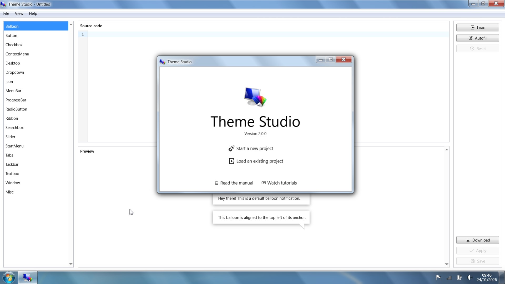

Win7 Simu 深度对比：Android 上还原 Win7 体验，它凭什么比同类多了一份"情怀诚意"
在 Android 模拟 Windows 桌面这个赛道里，Win7 Simu 不是功能最强的，却是最懂用户想要什么的一款。本文从主题生态、经典游戏复刻、商业化克制三个维度，和同类工具做一次实打实的对比。
Win7 Simu 深度对比：Android 上还原 Win7 体验，它凭什么比同类多了一份"情怀诚意"
在 Android 上模拟 Windows 桌面，这件事本身就带点"情怀滤镜"的味道。从早期的 Bochs、QEMU 移动端移植，到后来专门瞄准 Win7 视觉风格的各种壳子，这个赛道的产品要么太重（真跑 x86 指令集，性能渣到只能当摆设），要么太轻（只抄个开始菜单皮肤，点进去啥也没有）。Win7 Simu 夹在中间，做了一件挺聪明的事：它不追求"运行 exe"这个伪命题，而是专注把 Win7 那套经典应用和视觉体验做透。
这篇就来聊聊，为什么在同类工具里我单独拿它出来写——不是因为它功能最全，而是因为它在几个关键点上，比同类竞品想得更清楚。
定位：它和"大厂方案""真模拟器"的本质区别
先把同类工具分个类，你大概就知道 Win7 Simu 站在哪了：
- 真 PC 模拟器（Bochs、Limbo）：能跑完整的 x86 系统镜像，但手机上跑 Win7 卡到翻个窗口都要等三秒，实用性约等于零。适合极客折腾，不适合日常用。
- 系统自带 / 厂商定制：这条路在 Android 上基本不存在，Google 不会内置 Windows 兼容层，厂商也懒得做这种费力不讨好的事。
- 轻量模拟壳（各种"Win10 启动器""电脑桌面"App）：换个桌面皮肤，图标点开都是网页快捷方式，点两下就露馅。
- Win7 Simu官网走的是第四条路：它是一个应用集合 + 主题引擎，把 Win7 时代最经典的那批东西——游戏、小工具、视觉风格——用 Web 技术重新实现一遍，打包成一个能在手机上流畅跑的 App。
这条路不新，但它是目前为止走得最彻底的一个。
差异化一：Theme Studio，把"换皮"做成了社区生态
同类工具也能换主题——改个壁纸、换套图标包，到此为止。这款直接下载就能用的 App，内置了一个叫 Theme Studio 的模块，本质上是一个CSS 编辑器 + 社区发布平台。
这意味着什么？意味着你不仅能换壁纸和图标，还能改窗口的圆角半径、按钮 hover 效果、标题栏的渐变、甚至给整个桌面加一层毛玻璃滤镜。所有这些都是通过写 CSS 类选择器实现的，社区里别人写好的主题你可以直接拉下来用，也可以 Load 进编辑器看源码、二次修改——类选择器的完整列表在win7simu文档里有收录，想深入研究的可以对照着调参数。

这个设计最妙的地方在于门槛分层：完全不想碰代码的人，点一下 Community 标签就能拉个热门主题换上；愿意学点 CSS 的人，从 Templates 标签拿个空主题起步，改几个数值就能看到效果；真的做主题的开发者，发布不需要审核、不需要付费、别人可以拉取学习但不能改了重新发布为自己的——版权保护也做到位了。
我见过不少同类工具也想做"主题商店"，但要么是官方自己出几套收点钱就完事，要么是开放了但根本没人贡献。Win7 Simu 能做起来，核心在于它没有把主题当成"增值服务"，而是当成产品的一部分——Theme Studio 本身就是免费的，社区主题也全免费，这才让生态能转起来。
差异化二：经典游戏，不是"移植"是"复刻"
同类工具里带游戏的也有，但大多是拿第三方 APK 套个 Win7 皮肤就塞进来。Win7 Simu 不一样，它内置的那批经典游戏——扫雷、纸牌、蜘蛛纸牌、Purble Place——是重新实现的。
蜘蛛纸牌就是个好例子。它不是随便找个单花色的简化版，而是完整还原了 Vista/7 时代的三种难度（1/2/4 花色）、10 列发牌布局、同花色整体移动规则、每列压一张的 Stock 发牌机制。4 花色难度下绝大多数玩家完不成，这也是原版蜘蛛纸牌的精髓——难，才有挑战欲。

Sticky Notes 便签也是同理。它没有做 Win10 版那种云同步、格式刷、列表功能，而是老老实实还原 Win7 原版的小贴纸风格：六种颜色、自动本地保存、右键就删、拖动改大小。想要云同步的用 Win10 版去，想要"桌面贴个黄色贴纸记事"这个感觉的，Win7 Simu 这个还原得正。
这种"不画蛇添足"的克制，在同类工具里很少见。大多数竞品要么偷工减料简化游戏逻辑，要么乱加功能把经典味搞没了。
差异化三：商业化极其克制——订阅只去广告，不搞付费墙
这一点必须单独拎出来说，因为它和我见过的大多数同类 App 都不一样。
Win7 Simu 的免费版有广告，出现在启动页弹窗（偶尔弹、不是每次）和部分游戏加载页底部横幅。但它的订阅唯一作用就是去广告——没有任何付费功能、没有付费主题、没有提前解锁、没有优先支持。36 款应用全免费，Theme Studio 全免费，41 套预置主题全免费，社区主题也全免费。订阅价格最低 $0.54/月、$4.33/年，一杯咖啡的零头。
很多用户犹豫的点其实是"免费版会不会广告太多"——实际感受是，广告不遮挡核心操作区域、不影响应用内功能，偶尔弹一下横幅而已。真正需要订阅的只有一种人：重度 Theme Studio 用户，每天都开编辑器改主题，多等一秒都嫌烦。
这种"不搞付费墙"的思路，说穿了就是开发者认清楚了自己产品的定位——这是个情怀产品，不是个流量变现工具。同类竞品里把游戏设成付费才能玩的、把主题锁在付费门槛后的、把核心功能分成 Pro 版独占的，一抓一大把。对比下来，Win7 Simu 这份克制反而成了竞争力。
它的取舍：为什么它不是"万能模拟器"
说了三个优点，也得说清楚它不擅长什么——不然就成软文了。
首先是平台限制，它只在 Android 上可用，iOS 因为系统限制做不了，PC 端也没有原生版本。想要在电脑上跑 Win7 应用的，老老实实装虚拟机或者找老机器。
其次，它不是个真的 PC 模拟器。你不能拿它跑 exe 文件，也不能装 Office、Photoshop 这种大型软件——那些功能真要做的话，性能问题立刻就来了。它解决的是"我想要 Win7 的经典桌面感觉、玩几个老游戏、用几个小工具"这个场景，不是"我要在手机上用电脑软件"。
最后，Theme Studio 虽然门槛分层了，但真要做出好看的主题还是得懂点 CSS。完全零基础的用户可能拉社区主题就够了，但想自定义的话，类选择器、伪元素、渐变语法这些基础知识绕不开。好在社区拉下来的主题可以直接看源码当教材，学起来比啃文档快。
选购结论：什么样的人选它，什么样的人选别的
说了这么多，直接给结论：
- 你想在手机上怀旧 Win7 那套桌面感觉：选它。没有其他同类能把主题生态、经典游戏还原、视觉细节做到这个水平的。
- 你是个主题爱好者：选它。Theme Studio 的社区机制决定了主题只会越来越多，学 CSS 改主题本身就是乐趣。
- 你想在手机上玩经典扫雷/纸牌/蜘蛛纸牌：选它。三个难度完整还原、无内购、无广告干扰（免费版广告也不挡玩）。
- 你想要真跑 exe、用电脑软件：别选它，用 Limbo 或者云桌面，Win7 Simu 解决不了这个问题。
- 你只换个桌面皮肤凑数：别选它，那些"Win10 启动器"足够了，下载体积还小好几倍。
一句话总结：Win7 Simu 不是功能最杂的 Android 模拟工具，但在"还原 Win7 经典体验"这个定位上，它把能做的都做透了，还做得比别家有诚意。情怀产品最怕过度商业化，它恰好反着来——克制让它更耐看。
这套资料在GitHub、Gitee 和 GitCode 三个仓库都有备份，主题开发文档和社区发布指南也同步了，国内用户访问哪个顺畅就用哪个。